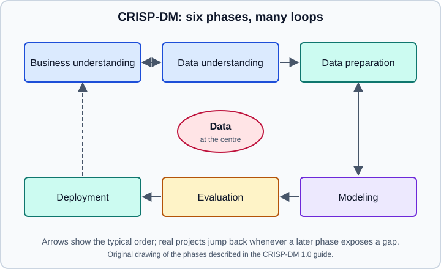

The Data Science Workflow
|
This content was generated with the assistance of AI and should be verified against the official documentation before being relied on in production. |
This page was checked in October 2026. It describes two well-known process models and then runs a small project through them with NumPy 2.5, pandas 3.1 and scikit-learn 1.9 (NumPy 2.5 needs Python 3.12 or later). Examples target Python 3.13 or 3.14 and were run on Python 3.13. The process models themselves are tool-independent and older than every library mentioned here. The previous page, What Is Data Science?, defines the vocabulary, and the next, The Scientific Python Stack, names the libraries used in the example.
Why a process model
Projects fail far more often because the wrong question was answered, or the data could not support the answer, than because the wrong algorithm was chosen. A process model is a checklist of things to settle in a sensible order, with explicit permission to go back. Two models are used here because they emphasise different things: CRISP-DM describes a project from the business problem to deployment, and the R for Data Science model describes the day-to-day analysis loop.
CRISP-DM
CRISP-DM (Cross-Industry Standard Process for Data Mining) was published as version 1.0 in 2000 by a consortium that included NCR, SPSS and DaimlerChrysler. The original project website is no longer online, but the guide is still mirrored and widely cited, and its structure has been reused by many later methods. It defines six phases. The arrows between phases are typical, not mandatory: the guide stresses that the sequence is not rigid and that moving back and forth is normal.

The guide breaks each phase into generic tasks. The table lists them in the guide’s own order and adds what each one means for a Python project.
| Phase | Tasks named in the guide | What it looks like in practice |
|---|---|---|
Business understanding |
Determine business objectives; assess the situation; determine data mining goals; produce a project plan |
Write down the decision the work will support, who will use it, what success means in numbers, what data and people are available and the constraints (privacy, time, budget) |
Data understanding |
Collect initial data; describe data; explore data; verify data quality |
Load the data, inspect shapes, types, ranges and missing values, plot distributions, and check that the data means what you think it means |
Data preparation |
Select data; clean data; construct data; integrate data; format data |
Filter rows and columns, fix types and missing values, derive features, join tables and produce the final modeling table |
Modeling |
Select modeling technique; generate test design; build model; assess model |
Choose candidate estimators, decide how they will be validated before fitting, train and compare them |
Evaluation |
Evaluate results; review process; determine next steps |
Measure against the business objective, not only the metric, review the pipeline for mistakes such as leakage, and decide whether to deploy, iterate or stop |
Deployment |
Plan deployment; plan monitoring and maintenance; produce final report; review project |
Ship a report, dashboard or service, schedule monitoring and retraining, and record what was learned |
Two points are easy to miss. First, evaluation in CRISP-DM is about the business objective: a model with a strong metric can still fail the evaluation phase because it does not support the decision it was meant to support. Second, deployment includes monitoring and maintenance from the start, since data and behaviour drift after launch. The pages on model evaluation and MLOps basics cover those two concerns in detail.
The R for Data Science loop
R for Data Science (second edition) draws the analysis as a loop of verbs: import the data, tidy it, understand it by iterating between transform, visualise and model, and communicate the result, with programming underneath all of the steps. The book is written for R, but the model is language-neutral and fits pandas just as well.
Its central idea is tidy data: each variable is a column, each observation is a row and each type of observational unit is a table. Putting data in that shape once makes every later step simpler. The pandas guide to data cleaning shows how to reach it in Python, and the R equivalent is described on tidyverse and dplyr.
The two models line up as follows.
| CRISP-DM | R4DS | Python libraries commonly used |
|---|---|---|
Business understanding |
(before the loop) |
Pen and paper; a written problem statement |
Data understanding |
Import, visualise |
pandas, PyArrow, Matplotlib, seaborn |
Data preparation |
Tidy, transform |
pandas, NumPy |
Modeling |
Model |
scikit-learn, statsmodels, SciPy |
Evaluation |
(inside the loop) |
scikit-learn model selection and metrics |
Deployment |
Communicate |
Jupyter, Quarto, a web service |
Framing the question
The most valuable step is the first one, and the cheapest to skip. Before opening a notebook, write answers to these questions in a few sentences.
-
What decision will change because of this work, and who makes it?
-
What would a useful answer look like (a number, a ranking, a yes or no, a chart)?
-
Which metric measures success, and what value is good enough? Include the cost of each kind of error, because a false alarm and a missed detection rarely cost the same.
-
What is the simplest approach that could work today, and how well does it do? That is the baseline.
-
Is the data available, legal to use for this purpose and measured when the prediction would be needed? A column that is only known after the event you predict cannot be a feature.
-
How will the result be checked after launch?
Questions 4 and 5 deserve emphasis. A baseline is a trivial predictor, such as always predicting the most frequent class, the previous value or a one-line rule from the business. Every model is judged against it. A model that barely beats the baseline is often not worth its maintenance cost, and without a baseline you cannot tell.
Deliverables
Each phase should leave something behind that another person can read.
| After | Keep |
|---|---|
Business understanding |
Problem statement, success metric, constraints |
Data understanding |
A data dictionary and a short data quality summary |
Data preparation |
A script or pipeline that rebuilds the modeling table from raw data |
Modeling |
The code, the random seeds, the validation scheme and the results table |
Evaluation |
A comparison with the baseline and a list of known weaknesses |
Deployment |
The packaged model, a monitoring plan and the final report |
Notebooks are well suited to the data understanding and communication parts. Preparation and modeling steps that must be repeated should move into modules or scripts, as discussed in Jupyter Notebooks & JupyterLab and Reproducibility & MLOps Basics.
A complete small project
The next script runs the first five CRISP-DM phases on a synthetic customer table, so no data file is needed. The business goal is to predict which customers cancel. The script follows three rules that the scikit-learn documentation lists among its common pitfalls: split before any preprocessing, never fit on test data, and keep preprocessing inside a Pipeline so it is refitted inside every cross-validation fold. It also sets random seeds, and it compares the model with a baseline.
import numpy as np
import pandas as pd
from sklearn.compose import ColumnTransformer
from sklearn.dummy import DummyClassifier
from sklearn.ensemble import HistGradientBoostingClassifier
from sklearn.impute import SimpleImputer
from sklearn.metrics import roc_auc_score
from sklearn.model_selection import cross_val_score, train_test_split
from sklearn.pipeline import make_pipeline
from sklearn.preprocessing import OneHotEncoder
# 1. Business understanding: predict which customers will cancel (churn)
# 2. Data understanding: build a small synthetic table
rng = np.random.default_rng(0)
n = 1_000
df = pd.DataFrame({
"tenure_months": rng.integers(1, 72, n),
"monthly_fee": rng.normal(60, 15, n).round(2),
"plan": rng.choice(["basic", "plus", "pro"], n),
})
logit = -0.04 * df["tenure_months"] + 0.03 * df["monthly_fee"] - 0.5
df["churned"] = rng.random(n) < 1 / (1 + np.exp(-logit))
df.loc[rng.choice(n, 50, replace=False), "monthly_fee"] = np.nan
print(df.isna().sum().to_dict(), f"churn rate {df['churned'].mean():.2f}")
# 3. Data preparation: split first, then preprocess inside a pipeline
X, y = df.drop(columns="churned"), df["churned"]
X_train, X_test, y_train, y_test = train_test_split(
X, y, test_size=0.2, stratify=y, random_state=0)
prep = ColumnTransformer([
("num", SimpleImputer(strategy="median"), ["tenure_months", "monthly_fee"]),
("cat", OneHotEncoder(handle_unknown="ignore"), ["plan"]),
])
# 4. Modeling: a baseline first, then a real model
baseline = make_pipeline(prep, DummyClassifier(strategy="prior"))
model = make_pipeline(prep, HistGradientBoostingClassifier(random_state=0))
# 5. Evaluation: cross-validate on the training data only
for name, est in [("baseline", baseline), ("hist gradient boosting", model)]:
scores = cross_val_score(est, X_train, y_train, cv=5, scoring="roc_auc")
print(f"{name:<24} AUC {scores.mean():.3f} +/- {scores.std():.3f}")
# Final check on the untouched test set, once
model.fit(X_train, y_train)
print(f"test AUC {roc_auc_score(y_test, model.predict_proba(X_test)[:, 1]):.3f}")The run on Python 3.13.18, NumPy 2.5.4, pandas 3.1.0 and scikit-learn 1.9.1 printed:
{'tenure_months': 0, 'monthly_fee': 50, 'plan': 0, 'churned': 0} churn rate 0.46
baseline AUC 0.500 +/- 0.000
hist gradient boosting AUC 0.708 +/- 0.019
test AUC 0.643Reading the output is part of the workflow. The baseline scores an AUC of 0.5, which is chance level. The model reaches 0.71 in cross-validation and 0.64 on the held-out test set. The gap between those two figures is normal with 800 training rows and a noisy synthetic target: the cross-validation estimate has a spread of about 0.02 and the test set has only 200 rows. In a real project you would now go back, as the process model allows: examine whether more data, better features or a different framing would help, and decide whether a model at this level supports the business decision. Also notice what the script does not do. It does not tune hyperparameters on the test set, and it evaluates the test set once.
Iteration, not a waterfall
Real projects loop. Typical back-edges and their causes:
-
Data understanding back to business understanding: the data cannot answer the question as posed, so the question is narrowed.
-
Modeling back to data preparation: the model’s errors reveal a missing feature or a mislabelled group.
-
Evaluation back to business understanding: the metric improved, but the decision it supports does not.
-
Deployment back to data understanding: after launch, the incoming data looks different from the training data.
Plan for the loops. Keep preparation code in functions, fix seeds, store results of each run and avoid hand edits to the data, so that going back costs minutes rather than days. The Choosing Tools & Learning Path page helps decide which tool fits each phase.
Where older material is outdated
CRISP-DM 1.0 (2000) remains the reference version, so older and newer sources agree on the six phases. What has changed is practice around them. Tutorials from before 2018 often shuffle rows and fit a scaler or imputer on the whole table before splitting, which leaks information, and use modules that no longer exist such as sklearn.cross_validation. The current approach is to split first and keep preprocessing inside a pipeline. Early texts also stop at "deployment of a report", while current practice treats monitoring, reproducibility and data and model documentation as part of the workflow, which are topics of the ethics and reproducibility pages.